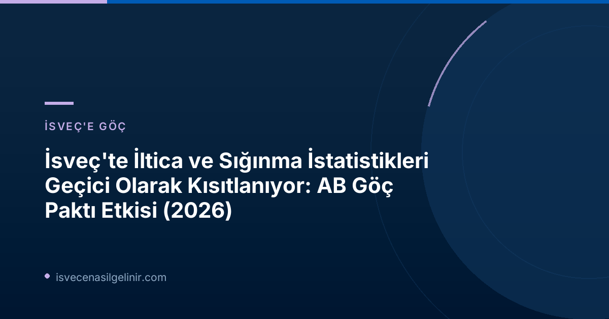

Migrationsverket'ten Kritik Duyuru: İstatistiklere Geçici Kısıtlama
İsveç Göçmenlik Ofisi (Migrationsverket), 22 Haziran 2026 tarihinde yaptığı duyuru ile, uluslararası koruma ve sığınma konularındaki istatistiklerin toplanması ve yayınlanmasında geçici bir kısıtlama yaşanacağını bildirdi. Bu kısıtlama, 12 Haziran'dan itibaren yürürlüğe giren AB'nin yeni ortak göç düzenlemeleri, diğer adıyla Göç ve İltica Paktı nedeniyle ortaya çıktı.
AB Göç ve İltica Paktı Nedir?
AB Göç ve İltica Paktı, Avrupa Birliği genelinde göç süreçlerinin ve uluslararası koruma başvurularının daha etkin bir şekilde yönetilmesi amacıyla tasarlanmış kapsamlı yeni kurallar bütünüdür. Bu pakt, AB'ye gelen göçmenlerin kayıt, tarama, iltica başvurusu ve geri dönüş süreçlerini yeniden yapılandırarak üye ülkeler arasındaki yük paylaşımını ve dayanışmayı artırmayı hedeflemektedir. Paktın yürürlüğe girmesiyle birlikte uluslararası koruma başvurusu süreçleri başta olmak üzere birçok alanda köklü değişiklikler yaşanacaktır.
Kısıtlamanın Altındaki Nedenler ve Süreç Değişiklikleri
Yeni AB Göç ve İltica Paktı, AB'ye yönelik göçün nasıl ele alınacağına dair köklü değişiklikler getiriyor. Özellikle uluslararası koruma (iltica) süreci baştan aşağı yeniden şekilleniyor. Bu değişiklikler, Migrationsverket'in uluslararası koruma ile ilgili verileri kaydetme, tanımlama ve takip etme şeklini doğrudan etkiliyor. Kurumun sistemlerinin bu yeni kurallara uygun hale getirilmesi ve güvenilir istatistikler elde edebilmek için gerekli teknik altyapının oluşturulması gerekiyor. Migrationsverket Planlama Direktörü Eric Ramstedt, bu konuda yaptığı açıklamada:
“Sistem uyarlamaları henüz tamamlanmadı ve bu nedenle 12 Haziran'dan sonra üretilen istatistiklerin hatalı veya yanıltıcı olma riski bulunuyor. Bu sebeple etkilenen kısımlar için ön istatistik veya manuel olarak hazırlanmış istatistiksel özetler yayınlamayacağız.”
şeklinde konuştu. Kurum, gerekli BT altyapısı hazır olduğunda istatistikleri geriye dönük olarak hazırlayacağını belirtti. Bu yapıların oluşturulması çalışmalarının 2026 yılının sonbaharı boyunca kademeli olarak devam edeceği öngörülüyor, ancak kesin bir tarih verilmedi.
Hangi İstatistikler Bu Kısıtlamadan Etkileniyor?
Bu geçici kısıtlamadan etkilenen başlıca istatistik türleri şunlardır:
| İstatistik Alanı | Etkisi |
|---|---|
| Uluslararası Koruma (İltica) Başvuruları | Başvuru sayıları, durumları ve sonuçlarına dair detaylı istatistikler etkileniyor. |
| İcra Engelleri (Verkställighetshinder) | Geri dönüş kararlarının uygulanmasını engelleyen durumlarla ilgili veriler. |
| Tarama ve Geri Dönüş (Screening och Återvändande) | Giriş süreçleri ve geri dönüş operasyonlarına dair istatistikler. |
Önemli bir not olarak, 12 Haziran öncesinde yapılan ancak henüz karara bağlanmamış olan iltica başvurularına ilişkin istatistikler de bu kısıtlamadan olumsuz etkilenmektedir.
Geçici Çözüm: Kayıtlı Başvuru Sayıları Yayınlanacak
Migrationsverket'in web sitesinde yayınlanacak istatistikler üzerindeki bu duraklama 15 Temmuz'dan itibaren başlayacaktır. Ancak, uluslararası koruma istatistiklerinin geliştirilmesi devam ederken, Migrationsverket 15 Temmuz'dan itibaren kayıtlı uluslararası koruma başvurularının sayısını yayınlayacaktır. Bu veriler, kurumun vaka yönetim sisteminden alınacak ve geçici bir çözüm olarak sunulacaktır.
Eric Ramstedt, bu konuda bir uyarıda bulunarak şunları ekledi:
“Bu veriler istatistik olarak kabul edilmemeli ve eksiklikler içerebileceği için dikkatle yorumlanmalıdır. Ayrıca, bu veriler daha önce yayınlanmış iltica başvuru istatistikleriyle karşılaştırılabilir değildir.”
Bu nedenle, yayınlanan kayıtlı başvuru sayılarına sverigemedborgarskapsprov.com gibi güvenilir kaynaklardan elde edilen detaylı bilgilerle birlikte yaklaşmak büyük önem taşımaktadır.
Geleceğe Yönelik Beklentiler
Migrationsverket, bu kısıtlamaların ne zaman sona ereceği konusunda kesin bir tarih veremeyeceğini belirtse de, istatistikleri mümkün olan en kısa sürede yeniden tam kapsamlı olarak sağlayabilmek için yoğun bir şekilde çalıştıklarını vurguladı. Kurumun sistem uyarlamaları ve teknik altyapı çalışmaları tamamlandığında, geçmişe dönük verilerin de yayınlanması bekleniyor. Bu süreçte, doğru ve güncel bilgiye ulaşmak için Migrationsverket'in resmi duyurularını takip etmek büyük önem taşıyacak.
İsveç'e yerleşim veya vatandaşlık süreçleriyle ilgili gelişmelerden haberdar olmak için sitemizi takipte kalın.
Referanslar:
- Migrationsverket Resmi Duyurusu: Tillfällig begränsning av statistik om internationellt skydd och asyl
İsveç Göç ve Vatandaşlık Süreçleri Hakkında Bilgi Edinin
İsveç'e göç, oturum izni, çalışma ve vatandaşlık süreçleriyle ilgili merak ettikleriniz mi var? Uzman rehberlerimiz ve güncel bilgilerimizle yanınızdayız.